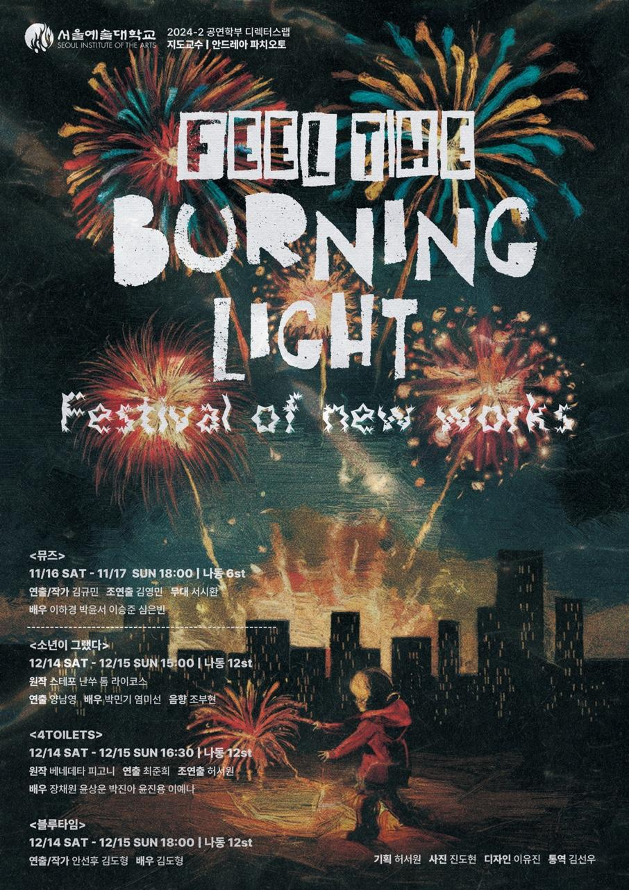

Director's LAB — Festival of New Works · 2024
My first independent production planning role — leading poster and ticket design, Instagram promotion, booking coordination, and FOH operations across a four-team festival.
Role
Assistant Director + Project Planner
Duration
Aug – Dec 2024 (5 months)
Venues
Seoul Arts Studio 6 & 12 → Bogwang Theatre → Artforest Theatre
Team
Team. 4 Toilets
Type
Festival / Devised Theatre
Director
Italy-based (remote collaboration)

Background & Objective
This project marked my first experience leading production planning independently — managing end-to-end schedule coordination, production support, and performance promotion.
Because the director was based in Italy, I maintained bilingual communication throughout rehearsals: Korean rehearsal logs for the cast and English reports for the director, allowing both sides to stay aligned.
As the production team consisted mainly of the director and performers, I took on responsibilities similar to a stage management role — coordinating closely with the venue and school to ensure smooth operation.
"Before the show, I contacted multiple venues to secure performance spaces. When all teams were scheduled on the same day, I worked to secure an additional venue to resolve scheduling conflicts."
Process
Assistant Director — Rehearsal Documentation
Documented the rehearsal process in Korean for the cast and English for the Italian director. Maintained meeting minutes, actor availability, and daily schedules. Communicated scene requirements and needs with technical teams.
Bilingual rehearsal documentation
Technical Rider
Created a detailed technical rider outlining stage usage, equipment requirements, and audience flow for venue operation and performance logistics.
Technical rider created for venue and school coordination
Poster & Ticket Design
Selected as poster designer for the entire festival. Developed a unified visual concept representing the overall identity of Feel the Burning Light while resonating with each of the four individual productions. Also designed physical tickets clearly communicating performance times and booking details.
Festival poster and ticket design
Instagram & Booking Platform
Created and managed an Instagram account — providing synopses, notices, schedules, venue directions, and a metaverse preview link. Coordinated advance registration through Naver Booking to manage both pre-booked and on-site audiences efficiently.
Instagram promotion and Naver Booking coordination
Profile Photography
Organised and directed profile photo shoots for all four festival teams — ensuring individual identity was maintained while strengthening the overall visual presence of the project.
Profile photography direction for four festival teams
Result
Achievements & Reflections
This project reaffirmed the importance of production roles that operate behind the scenes yet are essential to a performance's success. Managing all responsibilities alone was challenging — but this experience helped me overcome personal limitations, actively seek feedback, and complete the production with confidence. It deepened my understanding of the importance of teamwork and strengthened my confidence in future production and planning roles.